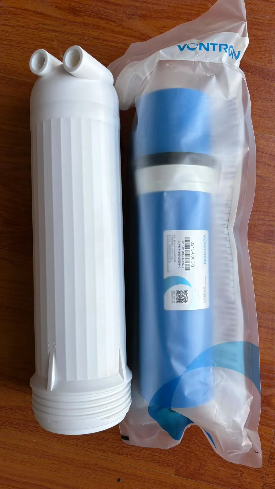
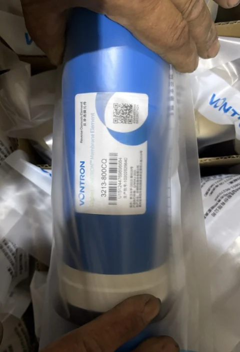
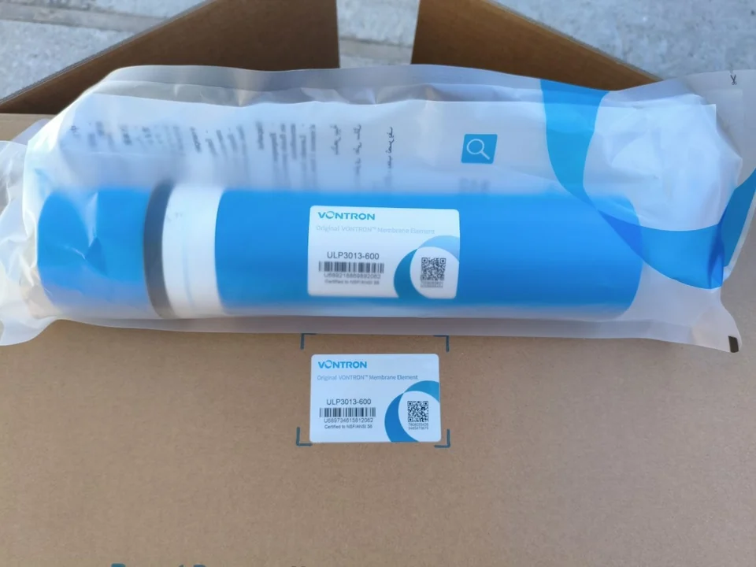
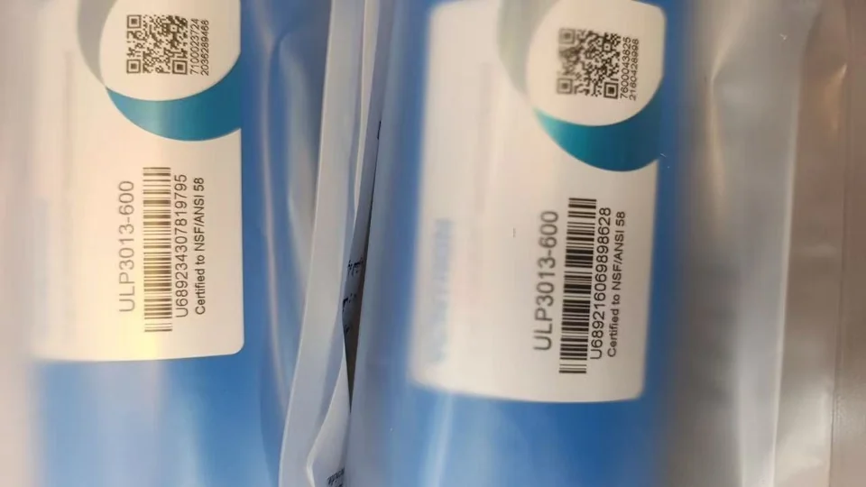
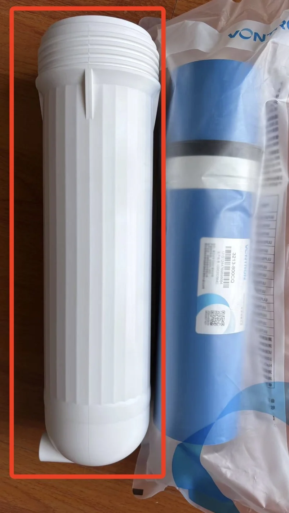
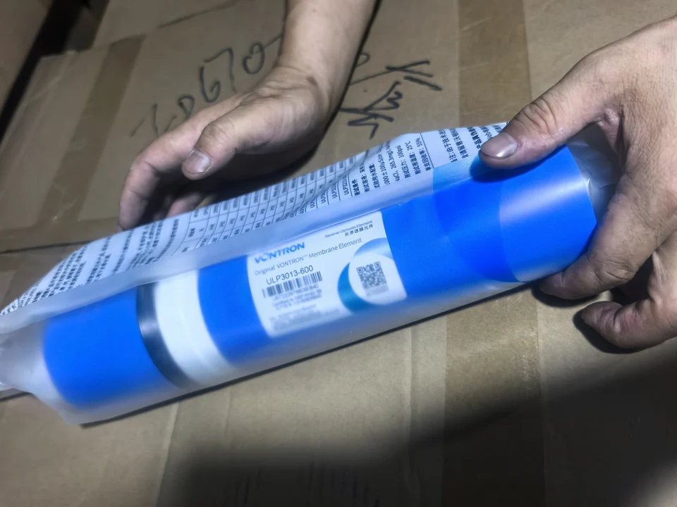
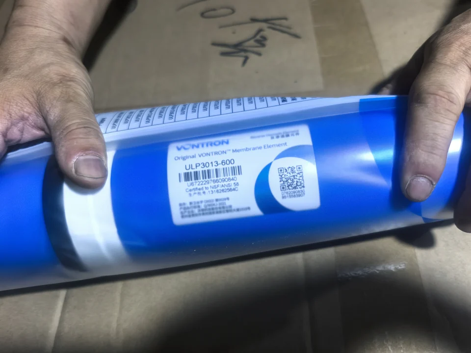
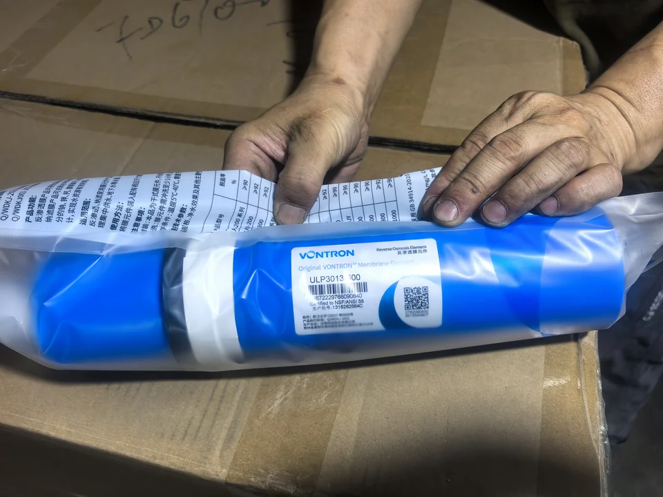
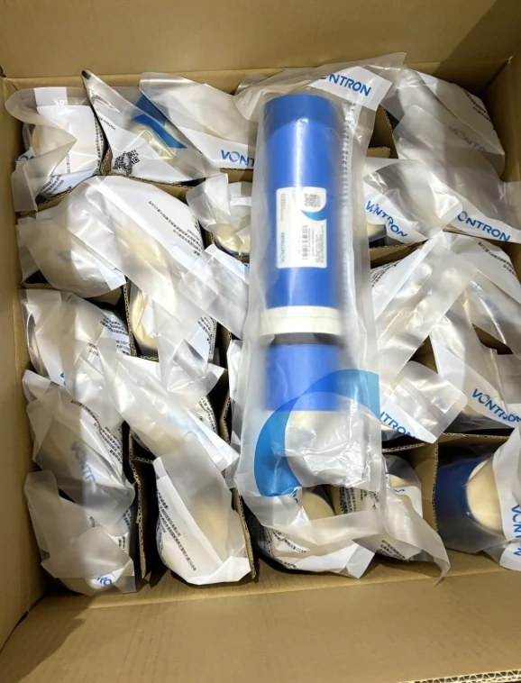
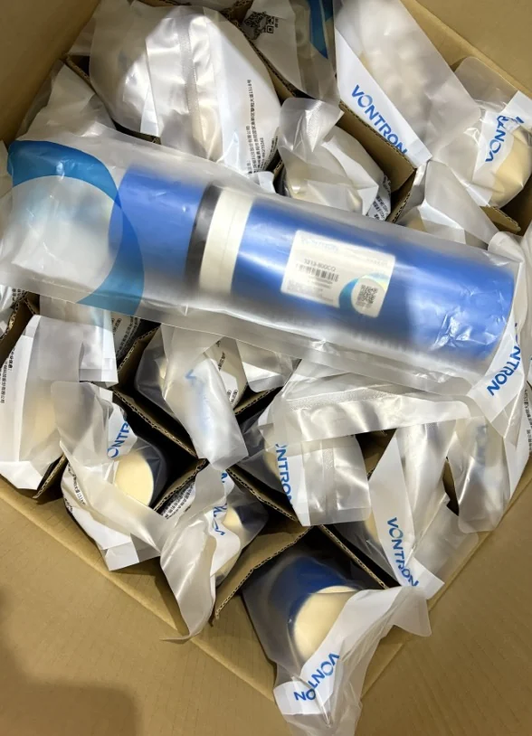

Phần tử màng thẩm thấu ngược (RO) lưu lượng cao 400GPD
- Công suất
- 400 GPD
- Loại
- Màng khô


Model đặc biệt trong hình: 3213-800CQ cùng vỏ màng dùng để xem xét độ phù hợp về kích thước và cấu tạo khi lắp đặt. Ảnh chụp nhãn ghi nhận đầy đủ model ghi trên phần tử màng được niêm phong.
Yuchen Water là nhà cung cấp phần tử màng thẩm thấu ngược độc lập tại Trung Quốc. Chúng tôi cung cấp màng Vontron chính hãng có thể truy xuất nguồn gốc cho các đơn hàng tiêu chuẩn và xem xét yêu cầu về model đặc biệt dựa trên vỏ màng, bơm, điều kiện nước cấp và lưu lượng mục tiêu.
Vai trò của từng bên: Vontron sản xuất các phần tử màng. Yuchen Water độc lập đảm nhiệm việc xác nhận model, điều phối cung ứng, xem xét tính tương thích và giao hàng xuất khẩu. Chúng tôi không tuyên bố mình sản xuất màng Vontron hoặc là nhà phân phối được Vontron ủy quyền.
So sánh các model được liệt kê và mở trang chi tiết. Các bản ghi model được tính riêng với các kích thước có thể tùy chỉnh; mức độ phù hợp phải được xác nhận cho dự án của bạn.

Con số lưu lượng giúp nhận diện model, nhưng không mô tả phần tử màng đó sẽ hoạt động như thế nào trong mọi hệ thống RO. Các thông số lưu lượng và tỷ lệ loại bỏ được công bố cần được trình bày kèm điều kiện thử nghiệm.


Xác nhận khả năng cung ứng hiện tại
Đây là phần tử màng thẩm thấu ngược áp suất siêu thấp dùng cho hộ gia đình. Khi tiếp nhận yêu cầu hỏi hàng, chúng tôi kiểm tra model đầy đủ trên nhãn của sản phẩm thực tế và đối chiếu với số lượng yêu cầu, điểm đến và tài liệu cần thiết.
| Model đầy đủ | ULP3013-600 |
|---|---|
| Lưu lượng nước thấm qua màng danh định | 600 GPD (2.27 m³/day) |
| Tỷ lệ loại bỏ trung bình | 98% |
| Tỷ lệ loại bỏ tối thiểu | 96% |
| Áp suất thử nghiệm | 100 psi (0.69 MPa) |
| Dung dịch thử nghiệm | 250 ppm NaCl ở 25°C |
| pH và tỷ lệ thu hồi khi thử nghiệm | pH 6.5–8.5; tỷ lệ thu hồi của một phần tử màng 50% |
| Kích thước được công bố | Chiều dài 13.11 in (333.0 mm) × đường kính 2.70 in (67.8 mm) |
| Kiểm tra vỏ màng và bơm | Xác nhận hình dạng và kích thước phần tử màng, cách bố trí cổng kết nối và bộ phận làm kín, vỏ màng, áp suất bơm và điều kiện vận hành mục tiêu trước khi đặt hàng. |
Vontron cho biết lưu lượng nước thấm qua màng và tỷ lệ loại bỏ của từng phần tử có thể khác nhau. Sản lượng thực tế của hệ thống còn phụ thuộc vào nước cấp, nhiệt độ, áp suất, tỷ lệ thu hồi, tiền xử lý và thiết kế hệ thống.

Nhãn trong các ảnh này ghi 3213-800CQ. Sản phẩm này đã được cung ứng dưới dạng model Vontron đặc biệt cho một yêu cầu hệ thống cụ thể, không phải sản phẩm thay thế dùng chung cho mọi màng 800 GPD.
Yuchen có thể tiếp nhận thông tin về model hiện có hoặc hệ thống của người mua, xem xét vỏ màng và bơm, đồng thời làm rõ lưu lượng cần thiết, số lượng và điểm đến. Thông số kỹ thuật cuối cùng căn cứ vào bảng thông số kỹ thuật, mẫu hoặc tài liệu đơn hàng đã được thống nhất.
Việc cung ứng model đặc biệt phụ thuộc vào việc xem xét kỹ thuật, số lượng, xác nhận của nhà sản xuất và phê duyệt thông số kỹ thuật cuối cùng.
Trao đổi về model đặc biệtNgười mua tìm kiếm màng thay thế OEM thường muốn giải quyết vấn đề về độ phù hợp khi lắp đặt và hiệu suất. Chỉ riêng nhãn 600 GPD, 800 GPD hoặc 1000 GPD không giải đáp được vấn đề đó.
Kiểm tra chiều dài và đường kính phần tử màng, hình dạng các đầu, vị trí cổng kết nối, vị trí bộ phận làm kín và phần tiếp nối với vỏ màng. Các mức lưu lượng định mức tương tự có thể sử dụng cách bố trí cấu tạo khác nhau.
Xem xét áp suất vận hành và lưu lượng khả dụng của bơm, không chỉ thông số trên nhãn bơm. Màng, vỏ màng và đường dẫn dòng chảy phải hoạt động đồng bộ tại điểm vận hành dự kiến.
Nhiệt độ nước cấp, độ mặn, tiền xử lý, lưu lượng nước thấm mục tiêu, tỷ lệ loại bỏ và tỷ lệ thu hồi đều ảnh hưởng đến kết quả. Hãy gửi điều kiện vận hành kèm theo yêu cầu hỏi hàng về model.
Đối với hệ thống hiện có: hãy gửi toàn bộ nhãn màng, ảnh rõ nét của vỏ màng và thông tin bơm. Đối với thiết kế mới, hãy bổ sung bản vẽ vỏ màng, đường đặc tính bơm và điểm vận hành mục tiêu.
Ảnh chụp có thể cho thấy sản phẩm thực tế đang có trong tay. Khả năng truy xuất nguồn gốc có được từ việc đối chiếu bằng chứng đó với chứng từ dùng để mua hàng, báo giá và giao hàng cho cùng một model.



Model và bao bì: đối chiếu mã model đầy đủ, túi niêm phong và hình thức trình bày của thùng carton.
Mã định danh và hồ sơ truy xuất lô: kiểm tra mã QR hoặc mã vạch và lưu thông tin lô cùng hồ sơ đơn hàng.
Hồ sơ thương mại: liên kết hồ sơ mua hàng, báo giá và giao hàng với model và số lượng được cung cấp.
Chúng tôi báo giá màng thẩm thấu ngược từ Trung Quốc theo model chính xác, số lượng và quốc gia nhận hàng. Có thể trao đổi về cả đơn hàng tiêu chuẩn và các model đặc biệt đã được rà soát. Tình trạng hàng hiện tại, quy cách đóng gói, chứng từ và thời gian được kiểm tra theo từng yêu cầu hỏi hàng thực tế.


Chúng tôi không công bố rằng hàng luôn có sẵn, MOQ cố định hoặc một thời gian giao hàng chung cho mọi model. Những chi tiết này phụ thuộc vào từng đơn hàng cụ thể.
Yêu cầu báo giá bán buônCung cấp toàn bộ nhãn màng hoặc thông tin hệ thống RO hiện tại.
Xác nhận chiều dài, đường kính, các cổng kết nối, kiểu kết nối và cách bố trí bộ phận làm kín.
Cung cấp áp suất vận hành, điều kiện nước cấp và nhiệt độ.
Nêu lưu lượng nước thấm mục tiêu, tỷ lệ loại bỏ và mục đích sử dụng dự kiến.
Xác nhận mẫu hoặc tài liệu thông số kỹ thuật, số lượng, quy cách đóng gói, điểm đến và chứng từ.
Chốt model, báo giá, thời gian và kế hoạch cung ứng theo lô.
Không. Vontron là nhà sản xuất màng. Các phần tử màng Vontron này không được sản xuất tại nhà máy của Yuchen Water. Yuchen đóng vai trò nhà cung cấp độc lập và phụ trách kiểm tra model, rà soát tính tương thích và giao hàng xuất khẩu.
Chúng tôi không tuyên bố mình là nhà phân phối được Vontron ủy quyền. Người mua khi so sánh các công ty hoạt động trong lĩnh vực phần tử màng thẩm thấu ngược tại Trung Quốc cần phân biệt nhà sản xuất với công ty cung cấp hàng và lập hồ sơ đơn hàng. Vontron sản xuất phần tử màng. Yuchen cung cấp sản phẩm một cách độc lập.
Có. Chúng tôi cung cấp màng VONTRON chính hãng trong bao bì nguyên bản của VONTRON. Chúng tôi kiểm tra nhãn model, bao bì, mã QR hoặc mã vạch, thông tin lô và hồ sơ từ mua hàng đến giao hàng. Tùy chỉnh OEM/ODM áp dụng cho thiết bị và hệ thống xử lý nước, không áp dụng cho việc thay thương hiệu trên bao bì nguyên bản của màng. Hãy gửi model màng và yêu cầu đối với hệ thống của quý khách để nhận báo giá.
Có, sau khi rà soát kỹ thuật. Model 3213-800CQ trên trang này là một ví dụ về cung cấp model đặc biệt. Số lượng, xác nhận của nhà sản xuất và thông số kỹ thuật cuối cùng phải được thống nhất trước khi cung cấp.
Hãy gửi model màng hiện có, kích thước và kiểu kết nối của vỏ màng, áp suất bơm, thông tin nước cấp, lưu lượng và tỷ lệ loại bỏ mục tiêu, số lượng đặt hàng, quốc gia nhận hàng và mọi chứng nhận hoặc tài liệu được yêu cầu.
Không. Lưu lượng tính bằng GPD được đo trong các điều kiện thử nghiệm đã nêu. Lưu lượng thực tế thay đổi theo áp suất, nhiệt độ, thành phần hóa học của nước cấp, tỷ lệ thu hồi, tiền xử lý và thiết kế hệ thống.
Kiểm tra chiều dài và đường kính màng, cách bố trí cổng kết nối và bộ phận làm kín, hình dạng và kích thước vỏ màng, áp suất vận hành của bơm, điều kiện nước cấp, lưu lượng mục tiêu và tỷ lệ thu hồi trước khi đặt hàng.
Sử dụng hướng dẫn kỹ thuật PURO-ULD để xem xét các điều kiện thử nghiệm do nhà sản xuất nêu, bằng chứng về chênh lệch áp suất, rủi ro trong tiền xử lý và dữ liệu dự án cần có trước khi lựa chọn màng.
Đối với model tiêu chuẩn, hãy gửi model chính xác, số lượng và điểm đến. Nếu là model đặc biệt hoặc chưa chắc chắn về phương án thay thế, hãy bổ sung thông tin hệ thống dưới đây.